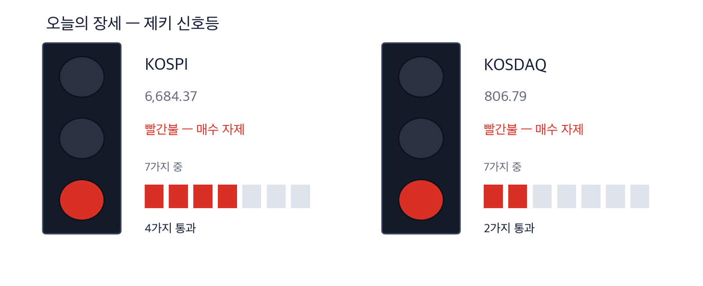
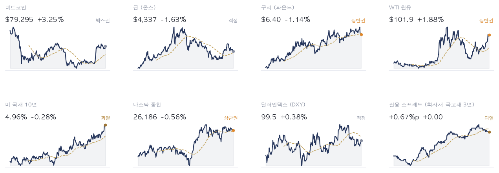
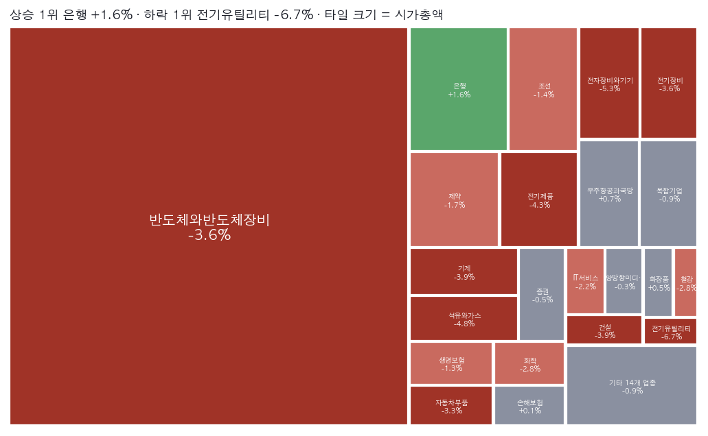
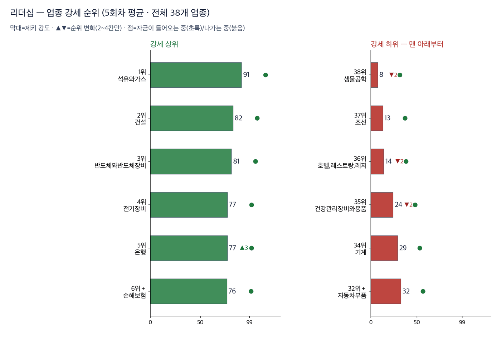
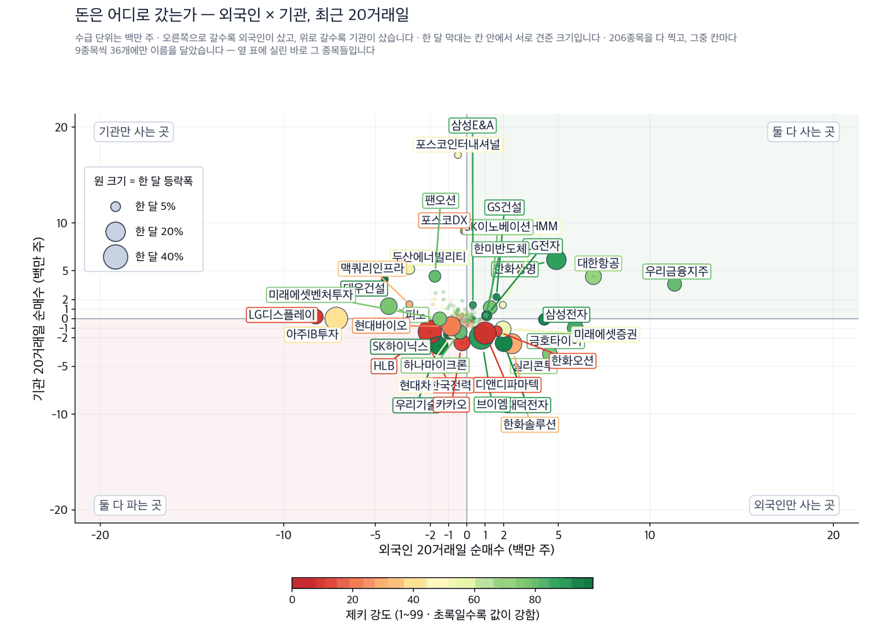
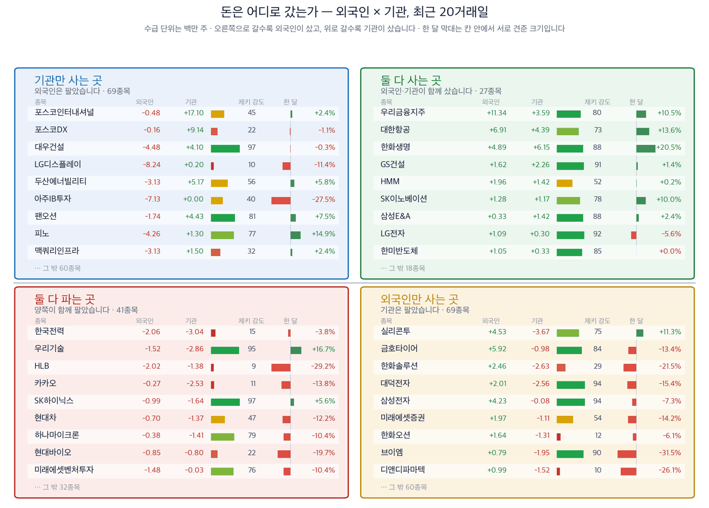
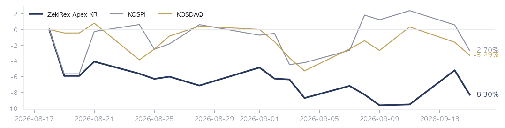

|
ZekiRex™ Apex KR — 2026년 9월 15일
오늘의 판단 · 1/2
데이터 기준 9/14 (KST) 종가 · 간밤 뉴욕 9/14 종가(현지시간) |
ZekiRex™ |
|
|
|
THE REX CALL
긴 금리가 5%에 닿자 서울은 오늘 현금을 버는 회사와 나중에 버는 회사로 갈렸습니다.
매수도 매도도 없었습니다. 4개 자리가 모두 차 있고, 손절선에 닿은 종목이 없습니다.
오늘 반드시 알아야 할 것
1. 미국 10년물 국채금리가 장중 5%를 건드린 뒤 내려왔습니다. 같은 날 독일 10년물은 15년 만의 최고였습니다. 긴 금리가 이 자리에 오면 이익이 먼 미래에 있는 회사부터 값이 깎입니다. 같은 업종이라도 지금 현금을 버는 회사가 유리해집니다. (월스트리트저널·로이터·씨엔비시) 2. 주요 인공지능 기업 경영진들이 개발 속도를 늦추자고 공개로 요구했습니다. 뉴욕에서는 반도체의 낙폭이 가장 컸습니다. 요구가 말로 끝나지 않으면 설비 주문이 먼저 줄어듭니다. 장비와 부품을 대는 회사의 수주 잔고를 먼저 보셔야 합니다. (파이낸셜타임스·뉴욕타임스·더가디언) 3. 사우디아라비아 송유관이 폐쇄되면서 브렌트유가 106달러대로 올라섰습니다. 세계 공급의 4%가 흔들린다는 분석이 나왔습니다. 기름값은 원가와 물가로 두 번 들어옵니다. 원가를 파는 값에 옮길 수 있는 업종과 그러지 못하는 업종이 이때 갈립니다. (연합뉴스·씨비에스뉴스·알자지라) 4. 9월 14일 외국인이 하루 3조2천억원어치를 팔았고, 코스피는 6,600대로 마감했습니다. 시가총액은 한 달 새 270조원 줄었습니다. 파는 쪽이 한 주체로 몰리면 지수는 실적이 아니라 수급으로 움직입니다. 그 구간에는 종목의 좋고 나쁨이 값에 늦게 반영됩니다. (매일경제·머니투데이) 5. 한국은행이 이란 사태의 불확실성을 이유로 기준금리를 묶었습니다. 원·달러는 ₩1,348.50에 마쳤습니다. 금리를 묶어 둔 쪽과 올리는 쪽의 간격이 벌어지면 환율이 먼저 반응합니다. 수출로 버는 회사와 원자재를 사 오는 회사가 반대 방향으로 움직입니다. (케이이디글로벌·연합뉴스 경제)
| |
 이 그림 읽는 법 | 켜진 등 | 오늘의 국면입니다. 초록은 매수 우위, 노랑은 관망, 빨강은 매수 자제입니다. | | 채워진 칸 | 7가지 조건 중 몇 개를 통과했는지입니다. 칸이 많이 찰수록 시장 구조가 튼튼합니다. | | 칸이 다 찼는데 노랑·빨강이면 | 다른 이유로 한 단계 낮춘 것입니다. 그림 아래에 그 이유를 적었습니다. |
|
최근 10거래일 국면 추이 (왼쪽이 과거) 방향 — 신호등은 코스피와 코스닥 모두 빨간불이며, 이번에 내려온 것이 아니라 계속 빨간불입니다. 코스피는 7가지 중 4가지, 코스닥은 2가지를 통과했습니다. 다만 저희 규칙에서 신호등은 매수를 막지 않습니다 — 위험 관리는 종목마다 손절선으로 합니다.
| |
| 오늘의 조치 | | 오늘 신규 매매 없음. 규칙이 요구하지 않는 날에 거래하지 않는 것도 하나의 결정입니다. |
|
| 종목 | 비중 | 평가금액 | 평가손익 | 현재가 | 손절가 | 여유 | 보유일 | 다음 이벤트 | | 자이에스앤디 | 25% | ₩226,112,770 | −₩10,876,840 | ₩10,810 | ₩10,424 | +3.7% | 3일 | — | | 지엔씨에너지 | 25% | ₩228,296,250 | −₩8,663,550 | ₩48,750 | ₩46,552 | +4.7% | 3일 | — | | GS | 25% | ₩227,770,400 | −₩3,583,800 | ₩114,400 | ₩106,904 | +7.0% | 21일 | — | | 현대해상 | 26% | ₩234,645,200 | −₩2,309,500 | ₩50,800 | ₩47,196 | +7.6% | 3일 | — | | 현금 | — | ₩128,030 | 아직 투자하지 않은 돈입니다 |
계좌 요약 | 시작 자본 | ₩1,000,000,000 | 2026-08-18 설정 | | 실현 손익 | −₩57,613,660 | 판 종목에서 확정된 금액 | | 평가 손익 | −₩25,433,690 | 들고 있는 종목의 장부상 손익 | | 현재 평가액 | ₩916,952,650 | 시작 대비 −8.30% | | 최고 평가액 | ₩1,000,000,000 | 지금은 고점 대비 −8.30% |
시작 자본에 실현 손익과 평가 손익을 더하면 현재 평가액이 됩니다. |
| 관문을 통과한 종목 — 자리가 없어 담지 못한 이름들 | | 금융 3 | | 055550 신한지주 | RS 82 | ₩115,000 | | 086790 하나금융지주 | RS 82 | ₩140,400 | | 105560 KB금융 | RS 81 | ₩181,200 | | 반도체·하드웨어 2 | | 252990 샘씨엔에스 | RS 91 | ₩16,160 | | 098120 마이크로컨텍솔 | RS 90 | ₩50,000 | | 산업재·인프라 1 | | 028670 팬오션 | RS 80 | ₩6,050 | | 소비 1 | | 192820 코스맥스 | RS 92 | ₩276,000 |
| 왜 못 담았나. 자리는 넷뿐이고 각 자리에 총자산 25%가 들어갑니다 — 한 종목이 −8%에 걸려도 계좌 전체로는 2% 손실이 되도록 맞춘 구조입니다. 자리를 비우는 길은 손절과 오실레이터 이탈 둘뿐이라, 더 좋은 후보가 나와도 갈아타지 않습니다.
이 목록이 뜻하는 것. 15개가 조건을 통과했고 그중 보유 중인 종목을 뺀 7개가 대기 중입니다. RS는 80~92입니다. 우리 4자리는 에너지·정유 1, 산업재·인프라 1, 반도체·하드웨어 1, 금융 1로 나뉘어 있고 가장 큰 쪽이 에너지·정유입니다 — 그래서 하루 등락이 지수와 평균 2.2%p 벌어졌고, 가장 크게 갈린 9/7 세션에는 코스피 보다 5.6%p 더 내렸습니다. 자리가 하나 열리면 이 순서의 맨 위부터 검토합니다. 매수 추천이 아닙니다. |
조건은 통과했지만 품질 하한에서 걸린 종목 | 에이피알 278470 — 품질 하한 미달 | | 롯데렌탈 089860 — 재무 등급 SMR E — 품질 하한 미달 | | 금호타이어 073240 — 품질 하한 미달 | | DB손해보험 005830 — 품질 하한 미달 |
|
| 핵심 지표 | 코스피 6,684 -3.26% · 고점 −26.7% 저희 신호등은 빨간불입니다. 7가지 조건 가운데 4가지만 통과했고, 52주 최고가보다 26.7% 아래에 있습니다. 구조가 무너진 쪽에 가깝습니다. 박스권 | 코스닥 807 -1.69% · 고점 −34.2% 코스피보다 덜 내렸습니다. 다만 7가지 가운데 2가지만 통과해 구조는 더 나쁩니다. 52주 최고가보다 34.2% 아래입니다. 하단권 | 원/달러 ₩1,348.50 ₩1,348.50에 마쳤습니다. 지난 1년 구간에서 아래쪽 3% 자리라 원화가 비싼 편입니다. 수출로 버는 회사에는 불리하고, 원자재를 사 오는 회사에는 유리합니다. 과매도 | 국고채 3년 4.02% 과열 | S&P 500 7,620 상단권 | 포트폴리오 -8.30% 현금 0% · 보유 4종목 9월 14일 하루 3.27% 내렸고, 코스피는 3.26% 내렸습니다. 차이는 0.01%p로 지수와 함께 움직였습니다. 다만 8월 18일 시작 이후로는 8.30% 손실이어서 코스피보다 5.61%p 뒤에 있습니다. 설정 이후 |
|
| 한 줄 정리: 9월 14일 서울은 두 지수가 함께 내렸습니다. 코스피가 3.26%, 코스닥이 1.69% 내려 806.79로 마쳤습니다. 같은 날 뉴욕에서도 유가와 장기 금리가 함께 올랐습니다. 두 시장이 같은 이유로 내렸습니다. |
|
|
|
판단의 근거 · 2/2
데이터 기준 9/14 (KST) 종가 · 간밤 뉴욕 9/14 종가(현지시간) |
ZekiRex™ |
|
|
| 오늘 반드시 알아야 할 것 |
|
값을 매긴 것은 실적이 아니라 금리였습니다
브렌트유가 다시 올라서자 미국 10년물 금리가 장중 5%를 건드렸습니다. 먼 미래의 이익을 오늘 값으로 깎는 힘이 그만큼 세졌습니다. 서울은 그 계산을 하루 만에 받았습니다. 외국인이 대량 매도로 돌았고, 코스피는 그 매도를 그대로 받았습니다. 저희 업종 순위에서는 은행이 3계단 오르고 자동차부품이 14계단 내렸습니다. 지수 한 줄보다 이 두 업종의 자리바꿈이 그날의 성격을 잘 보여 줍니다. 왜 그런가. 기름값이 시장 금리를 밀어 올리고, 시장 금리가 자산 값을 다시 계산합니다. 여기에 인공지능 속도조절 요구가 겹치면서 이익이 먼 회사가 먼저 값을 잃었습니다. 은행은 반대쪽에 섭니다. 금리가 오르면 예대 마진이 넓어지고, 버는 시점이 오늘입니다. 신한지주가 1.86%, 하나금융지주가 1.89%, KB금융이 1.85% 올랐습니다. 지수가 내린 날에 오른 것은 우연이 아닙니다. 다음에 무엇이. 9월 14일 저희 선별에서는 616종목 가운데 15종목이 모든 관문을 통과했고, 값을 구하지 못한 종목은 없었습니다. 지수가 내린 날에도 기준을 넘는 종목은 남아 있다는 뜻입니다. 다만 그중 4곳은 품질 하한에 걸려 제외했고, 나머지도 살 자리가 없었습니다. 4개 자리가 이미 차 있기 때문입니다.
그래서 우리는: 기계·자동차부품·비철금속을 갖고 계신 독자라면 지수 자리보다 수주 잔고를 보셔야 합니다. 이 업종들은 긴 주문 주기로 파는 곳이어서, 긴 금리가 오르면 주문을 내는 쪽의 셈이 먼저 달라집니다. 은행을 갖고 계시다면 9월 14일의 상승은 성장이 아니라 금리 이야기입니다. 이번 주 연방공개시장위원회에서 표가 팽팽하게 갈리면 그 근거가 얇아집니다. 저희 장부도 같은 힘을 맞았습니다 — 네 종목이 모두 내렸고, 그중 어느 것도 금리가 내려서 산 종목이 아닙니다.
Rex Lens™
| |
| 그 밖에 알아야 할 것 | | 연방공개시장위원회 정책금리 결정 · 연방공개시장위원회가 이번 주 정책금리를 결정합니다. 인상 쪽 베팅이 90%까지 올랐고, 워시 의장이 표 대결을 앞두고 있습니다. (연합뉴스 · CNBC) → 결정 자체보다 몇 표가 갈렸는지가 다음 회의의 방향을 알려 줍니다. 표가 팽팽하면 한 번으로 끝날 가능성이 커집니다. | | 일본은행 금리 인상 회의 · 일본은행이 이번 회의에서 금리를 올릴 것으로 시장은 이미 보고 있습니다. 관심은 인상 자체보다 앞으로의 기조에 쏠려 있습니다. (Japan Times) → 일본 금리가 오르면 싸게 빌려 다른 나라에 투자하던 돈이 되돌아갑니다. 한국을 포함한 주변 시장의 외국인 수급에 시차를 두고 닿습니다. | | 삼성바이오로직스 3조원 유상증자 공모 절차 · 삼성바이오로직스의 3조원 규모 유상증자가 금융감독원의 정정 요구 없이 공모 절차에 들어갔습니다. 주식 수가 실제로 늘어나는 시점은 절차가 끝난 뒤입니다. (매일경제) → 증자는 주당 가치를 나누는 일이므로 조달한 돈이 무엇을 벌어 오는지가 전부입니다. 돈이 들어온 뒤의 설비 계획을 함께 보셔야 합니다. | | 미국 탄소배출 규제 폐지 추진 · 미국 정부가 탄소배출 규제를 없애는 쪽으로 움직이고 있습니다. 기후 피해를 걱정하는 목소리가 커지는 흐름과는 반대 방향입니다. (동아일보) → 규제가 풀리면 배출을 줄여 온 기업이 쌓아 둔 비용 우위가 얇아집니다. 유럽 기준에 맞춘 한국 수출 기업에는 셈이 복잡해집니다. | | 한국, 2030년대 핵융합 발전 도전 · 한국이 인공지능 시대의 전력 수요에 대비해 2030년대 핵융합 발전을 목표로 삼았습니다. 전기를 얼마나 싸게 대느냐가 다음 경쟁의 갈림길이 됩니다. (이데일리) → 발전은 십년 단위의 이야기이므로 지금 값에 담기지 않습니다. 대신 송배전과 변압기를 만드는 회사의 주문이 먼저 움직입니다. |
| 한국과 미국을 잇는 것: 뉴욕이 반도체에 매긴 값은 예전보다 더 그대로 서울로 넘어옵니다. 경향신문은 한국 수출에서 정보통신이 차지하는 몫이 60%를 넘었다고 전했습니다. 그만큼 뉴욕의 재계산이 서울 개장에 바로 닿습니다. 다만 9월 14일 서울은 반도체보다 수급으로 움직였습니다 — 외국인 매도가 업종을 가리지 않았습니다. |
 Rex Pulse™ — 지수·가상자산 / 통화 / 원자재 / 채권 16종, 1년 추이와 50일 이동평균(점선) · 기준 한국 9/14 종가, 뉴욕 9/14 종가(현지시간) |
한 장에서 읽을 것은 2가지입니다. 기름값이 오르는 동안 달러인덱스는 99.5로 거의 움직이지 않았습니다. 통화가 아니라 실물 수요와 채권 공급이 금리를 밀어 올렸다는 뜻입니다. 미 국채 10년물은 4.96%, 30년물은 5.33%로 마쳤습니다. 한국 국고채 3년물도 4.02%로 올라 서울이 같은 방향을 따라갔습니다. 금리가 오르는 국면에서는 빌린 돈으로 설비를 짓는 회사의 부담이 먼저 커집니다. |
 색은 당일 등락(짙을수록 큼), 타일은 시가총액입니다. 상단에 당일 상승·하락 1위가 적혀 있고, 큰 칸이 움직인 날이 지수가 움직인 날이라는 뜻입니다 — 아래 리더십 순위(추세의 힘)와 함께 읽으십시오. |
| 리더십 — 업종 강세 순위 |  이 그림 읽는 법 | 막대 | 업종 소속 종목의 제키 강도 중앙값입니다. 최근 5회차를 평균해 하루치 흔들림을 걷어냈습니다. | | ▲▼ 숫자 | 하루 전보다 순위가 몇 칸 움직였는지입니다. 1칸은 너무 작고 5칸 이상은 절반이 되돌아와서(실측) 2~4칸만 적습니다. | | 점 | 20거래일 자금 순위의 방향입니다. 초록이면 들어오는 중, 붉으면 나가는 중입니다. | | 공동 순위 | 값이 같으면 같은 순위입니다. 억지로 가르지 않습니다. | | 강세 상위 | 강도가 가장 높은 업종들입니다. 자리가 열리면 여기서부터 찾습니다. | | 강세 하위 | 전체 업종 가운데 맨 아래입니다. 번호는 왼쪽과 같은 잣대라, 38개 업종이면 38위가 가장 약합니다. 지금 새로 살 자리가 아니고, 들고 계신 종목이 여기 속하면 손절선부터 확인하실 자리입니다. 바닥에서 돌아서는 업종은 막대보다 점이 먼저 초록으로 바뀝니다. | | 번호가 건너뛰면 | ＋ 표시가 붙은 업종입니다. 맨 아래 다섯에 들지는 않았지만 본문이 짚었거나 저희가 들고 있어 함께 실었습니다. 자료가 빠진 것이 아닙니다. |
| 순위 | 업종 | 제키 강도 | 변화 |
|---|
| 1위 | 석유와가스 | 91 | | | 2위 | 건설 | 82 | | | 3위 | 반도체와반도체장비 | 81 | | | 38위 | 생물공학 | 8 | ▼2 | | 37위 | 조선 | 13 | | | 36위 | 호텔,레스토랑,레저 | 14 | ▼2 |
| | 수급 — 외국인·기관은 어느 쪽이었나 |  이 그림 읽는 법 | 점 하나 | 종목 하나입니다. 가로·세로 위치가 두 값을 그대로 나타내고, 가운데 가로·세로로 그어진 두 선이 기준선입니다. 네 귀퉁이의 이름표가 그 칸의 뜻입니다. | | 점 크기 | 최근 한 달 등락폭입니다. 오르든 내리든 크게 움직였으면 큰 점입니다. | | 점 색 | 제키 강도입니다. 초록일수록 주가가 시장에서 강합니다. | | 30종목만 | 이름이 겹치면 못 읽기 때문입니다. 가운데 몰린 나머지는 움직임이 거의 없는 종목들이라 뺐습니다. |
 이 그림 읽는 법 | 네 칸 | 가로와 세로 두 값이 각각 기준선을 넘었는지로 넷을 가릅니다. 오른쪽 위는 둘 다 넘은 곳, 왼쪽 아래는 둘 다 못 넘은 곳, 나머지 두 칸은 한쪽만 넘은 곳입니다. 칸 이름이 그 칸에 든 종목의 상태를 한 문장으로 적어 둔 것입니다. | | 가운데 두 칸 | 두 기간을 견주는 자리입니다. 글자 A~E가 있으면 이 업계가 쓰는 표준 등급으로, A는 강한 매수, B는 매수 우세, C는 매수와 매도가 반반, D는 매도 우세, E는 강한 매도를 뜻합니다(전체를 다섯으로 나눈 순위라 A가 상위 20%입니다). 숫자가 있으면 그 기간의 순매수 규모입니다. | | 칸마다 9종목 | 그 칸에서 움직임이 가장 큰 순서입니다. 나머지는 칸 아래에 몇 종목인지만 적었습니다. 옆 산점도가 이름을 다는 종목이 바로 이 9종목씩입니다. | | 한 달 막대 | 0을 가운데 두고 오른쪽이 상승, 왼쪽이 하락입니다. 길이는 같은 칸 안에서만 서로 견주십시오 — 칸마다 기준이 다릅니다. | | 제키 강도 | 1~99 순위입니다. 막대가 길수록, 초록에 가까울수록 그 종목의 주가가 시장에서 강합니다. |
 이 그림 읽는 법 | 막대 둘 | 위가 석 달, 아래가 최근 두 주입니다. 같은 종목의 두 기간을 나란히 놓았습니다. | | 가운데 선 | 0.50 입니다. 오른쪽이면 오르는 날에 거래가 더 몰렸고, 왼쪽이면 내리는 날에 몰렸습니다. | | 화살표 | 석 달에서 두 주로 가는 방향입니다. 오른쪽으로 가면 최근에 더 들어온 것이고, 왼쪽이면 식은 것입니다. | | 맨 오른쪽 글씨 | 그 방향을 말로 적은 것입니다 — 「최근에 더 들어옴」이면 자금이 이어지는 중입니다. |
이름을 확인한 종목 전부를 넷으로 갈랐습니다. 오른쪽으로 갈수록 외국인이 샀고, 위로 갈수록 기관이 샀습니다. 지금 누가 사고 있는지를 보여 주는 자리이지 무엇을 사라는 자리가 아닙니다. 업종 — 값의 강세와 돈의 흐름을 나란히 돈이 먼저 온 곳 — 값은 아직입니다 | 업종 | 강세 | 자금 | 20거래일 |
|---|
| 조선 | 51 | 16 | +356,603주 | | 화학 | 32 | 11 | +1,437,117주 | | 무역회사와판매업체 | 20 | 2 | +16,671,950주 |
값만 센 곳 — 돈은 빠지고 있습니다 | 업종 | 강세 | 자금 | 20거래일 |
|---|
| 전자장비와기기 | 13 | 43 | -7,036,393주 | | 백화점과일반상점 | 10 | 37 | -3,178,316주 | | 복합기업 | 9 | 30 | -1,460,418주 |
강세 순위 — 제키 강도(12개월 가중)로 세운 순위입니다. 최근 5회차를 평균해 하루치 흔들림을 걷어냈습니다. 자금 순위 — 20거래일 순매수로 세운 순위입니다. 값이 아니라 **돈이 들어온 양**을 봅니다. 공동 순위 — 값이 같으면 같은 순위를 줍니다. 억지로 가르지 않습니다. 두 순위가 어긋나면 — 그 자리가 볼 만합니다. 돈이 먼저 오면 값이 아직인 것이고, 값이 먼저 세면 돈이 빠지는 중일 수 있습니다. |
| Rex 25™ — 당일 등락률 전체 순위 | | 01 252990 샘씨엔에스+2.41% | | 02 192820 코스맥스+2.03% | | 03 086790 하나금융지주+1.89% | | 04 055550 신한지주+1.86% | | 05 105560 KB금융+1.85% | | 06 028670 팬오션+0.33% | | 07 089860 롯데렌탈+0.00% | | 08 005830 DB손해보험-0.05% | | 09 ● 001450 현대해상-0.97% | | 10 278470 에이피알-2.28% | | 11 ● 119850 지엔씨에너지-3.66% | | 12 ● 078930 GS-3.87% | | 13 073240 금호타이어-4.34% | | 14 ● 317400 자이에스앤디-4.59% | | 15 098120 마이크로컨텍솔-10.39% |
| 저희 기준을 넘은 15종목 가운데 3곳은 9월 14일에도 52주 최고가 언저리를 지켰습니다. 하나금융지주가 최고가와 같은 자리이고, 신한지주가 0.2%, 샘씨엔에스가 0.4% 아래입니다. 지수가 내린 날에 이 자리를 지켰다는 뜻입니다. 셋 중 둘이 은행인 것은 금리가 오른 국면과 맞습니다. 품질 하한에 걸려 제외한 곳은 에이피알·롯데렌탈·금호타이어·DB손해보험입니다. | | 15종목뿐입니다. 25자리 가운데 오늘 조건을 만족한 것이 15개라는 뜻이고, 빈자리는 채우지 않습니다. ● 표시가 우리 보유 종목입니다. 순서는 등락률만 따릅니다 — 하락 상위에 보유 종목이 있어도 그 자체가 매도 신호는 아닙니다. 매도는 −8% 손절과 오실레이터 이탈, 둘뿐입니다. |
| 보유 비중 — 하한 8% / 진입 25% | | 현대해상 00145025.6% | | 지엔씨에너지 11985024.9% | | GS 07893024.8% | | 자이에스앤디 31740024.7% |
25%는 진입 시점의 크기이지 보유 한도가 아닙니다. 오른 종목을 크다는 이유로 줄이지 않습니다. |
| Rex Radar™ — 앞으로의 일정 | | 이번 주의 핵심 — 이번 주의 중심은 연방공개시장위원회입니다. 인상 쪽 베팅이 90%까지 올랐다고 연합뉴스가 전했습니다. 인상이 확인되면 기름값이 올려놓은 시장 금리 위에 정책이 한 번 더 얹힙니다. 그때는 환율과 외국인 수급이 같은 방향으로 움직이기 쉽습니다. | | 9월 17일 (목) 03:00 KST · 미국 9월 16일 (수) 14:00 ET (현지시간) | 연방공개시장위원회 정책금리 결정핵심 기름값이 올려놓은 시장 금리 위에 정책이 한 번 더 얹히는지가 여기서 갈립니다. 볼 숫자: 인상 쪽 베팅 90%가 실제 결정과 맞는지, 반대표가 2표를 넘는지 봅니다. | | 9월 15일 (화) 09:00 KST | 서울 개장 — 3조2천억원 순매도 다음 거래핵심 외국인이 이틀 연속 파는지가 수급 국면인지 하루 사건인지를 가릅니다. 볼 숫자: 코스피가 6,684.37 위에서 마치는지, 외국인이 순매수로 도는지 봅니다. |
|
|
 8월 18일 시작 이후 장부는 8.30% 손실이고, 같은 기간 코스피는 2.70%, 코스닥은 3.29% 내렸습니다. 지수보다 5.61%p 뒤에 있습니다. 마감한 거래 5건 중 1건만 이익이었습니다. 9월 11일에 산 3종목이 아직 손실 구간에 있는 것이 차이의 대부분입니다. 그 3종목이 손절선에 닿지 않고 되돌아오는지가 이 격차를 좁힐지 정합니다. 닿으면 손실이 확정되고 자리가 비며, 되돌아오면 격차는 빠르게 줄어듭니다. 그때까지는 지수를 따라가지 못하는 구간으로 보셔야 합니다. |
| 2026-09-14 종가 기준 심사 대상 616종목 가운데 15종목이 조건을 통과했습니다. 조건 통과는 매수 추천이 아닙니다. |
| 출처: 한국거래소(KRX) 공시 시세, 15:30 종가 · 서울외국환중개 고시환율(네이버 금융) · 야후 파이낸스 · 네이버 금융 |
|
본 리포트는 정보 제공 목적이며 개별 투자 자문이 아닙니다. ZekiRex™ Apex KR는 10억 원 규모의 모의 포트폴리오를 규칙 기반으로 운용합니다 — 실제 계좌도, 주문도, 체결도 없습니다. 표시된 성과에는 수수료와 세금, 매매 시 가격 미끄러짐이 반영되지 않았습니다. 종목 자료에는 상장폐지된 회사가 빠져 있습니다. 그래서 성과가 실제보다 높게 나오는 치우침(생존편향)이 있습니다. 과거의 성과는 미래를 보장하지 않으며, 투자에는 원금 손실 위험이 따릅니다. |
| This is the Rex Way, ZekiRex™ |
|